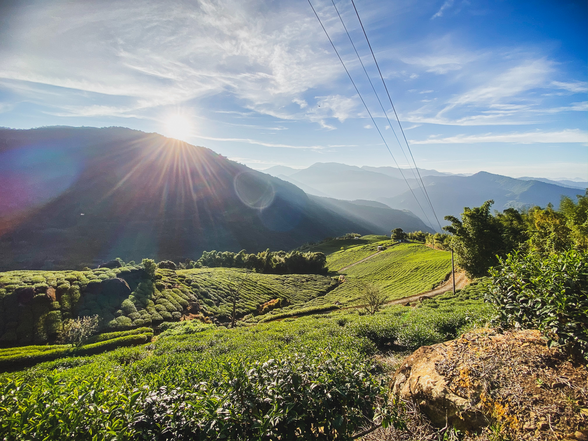

Sustainable trips to nature?
When you travel sustainably, it often turns out that you need a car for outdoor activities after all. Unfortunately, public transport in rural areas is often underdeveloped and offers too few frequencies and connections.But this does not always have to be the case! On top of the Alishan Mountain, up to almost 4000 meters high, on the beautiful island of Taiwan, a beautiful railway goes up to almost 2300 meters and serves as an example of sustainable infrastructure.

Alishan
The Alishan Mountain is located in the southern center of the East Asian island of Taiwan. From the city of Chiayi the Alishan Forest Railway starts the steep ride into the mountains! Originally built by the Japanese before World War II, during the occupation of Taiwan to transport timber, nowadays the forest railway offers tourists a unique, breathtaking and sustainable travel experience. Chiayi can be reached by express train from Taipei in under 2 hours. From Chiayi, the train goes up in tight curves, sometimes steeply, to a maximum altitude of 2274 meters
Want to see fireflies at close range?
The train passes several mountain villages on its way up the mountain. One particularly beautiful village is Fenqihu. It offers a good starting point for hiking. Fenqihu is also home to many species of fireflies. On a walk at night you can observe the glowing insects at close range. A magical experience.